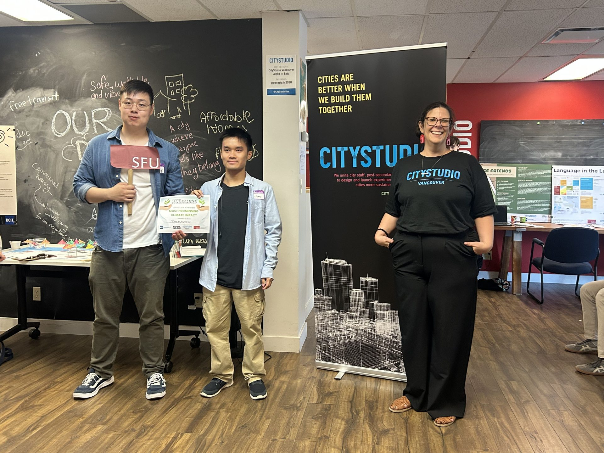
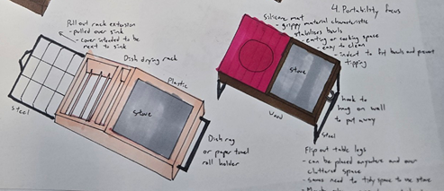
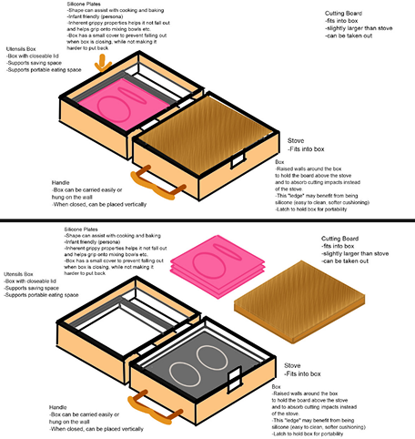
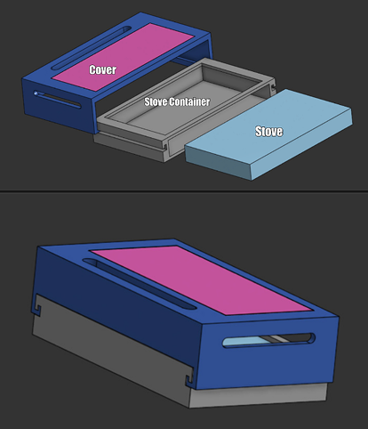
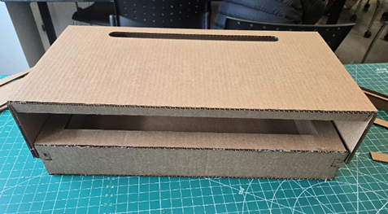
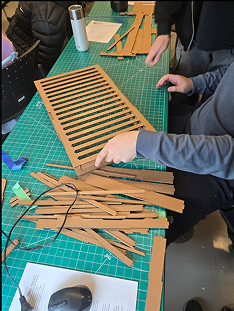
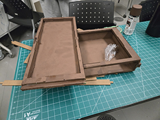
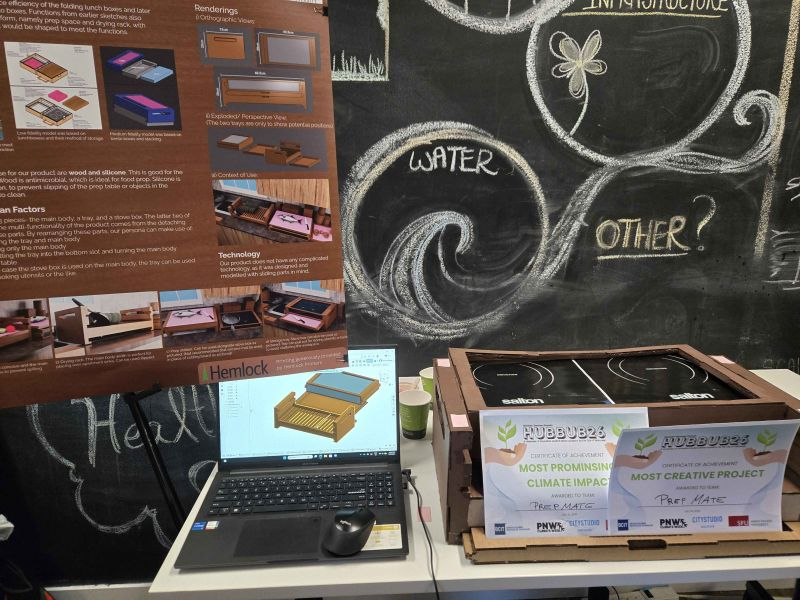
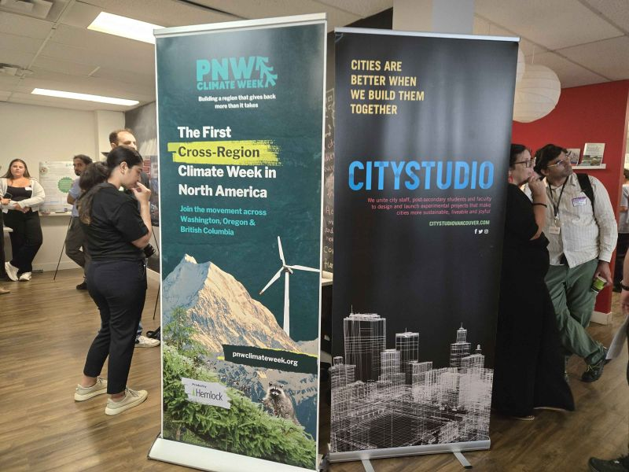

HUBBUB'26 -
CityStudio Showcase
Presented PrepMate at CityStudio's HUBBUB'26 student innovation showcase. Won People's Choice for "Most Creative Project" and tied for "Most Promising Climate Impact."

Overview
PrepMate tackles Vancouver renters' kitchen space shortages with a multi-functional induction stove cover. Designed for busy families, PrepMate serves as a stove cover, prep surface, carrying tray, and drying rack, offering portability and organization. It reduces clutter and enhances safety, creating efficient kitchens for small urban homes.
Team: Anthony Yiu, Wesley Zhang, Lok To Oscar Ho
Instructor: Ken Zupan · City Partner: Andrea Wickham
"I'd buy PrepMate for my mom." - Audience feedback
Project Poster

Inspiration & Process
We drew inspiration from the space efficiency of folding lunch boxes and later shifted focus to stacking bento boxes. Functions from earlier sketches also played a part in shaping the final form, namely prep space and drying rack, influencing how the final product would be shaped to meet the functions.




Fabrication & Assembly





Persona & Context of Use
Persona: Sarah Jones is a 30-year-old elementary school teacher and single mother living in a small apartment in Burnaby, BC, with her 5-year-old child. Her daily routine is busy and fast-paced, especially in the mornings when she needs to prepare meals while getting herself and her child ready for the day. Because her kitchen is small and has limited counter space, cooking and organizing can feel difficult and stressful. Sarah values practical and efficient solutions that help her save space, stay organized, and maintain a safer kitchen environment for both herself and her child.

Use Cases


Showcase Setup

